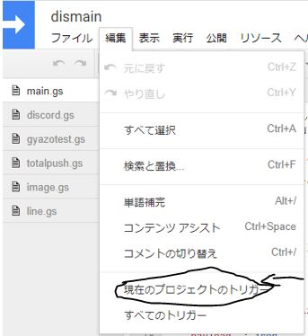
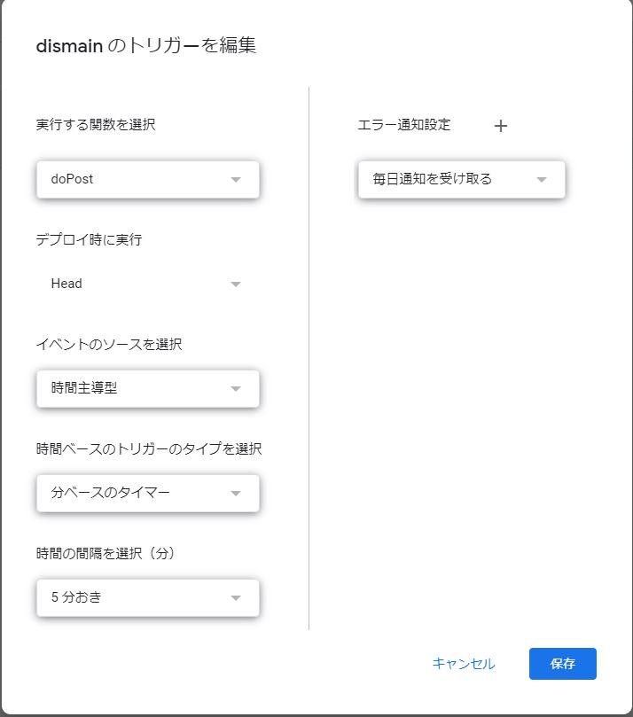
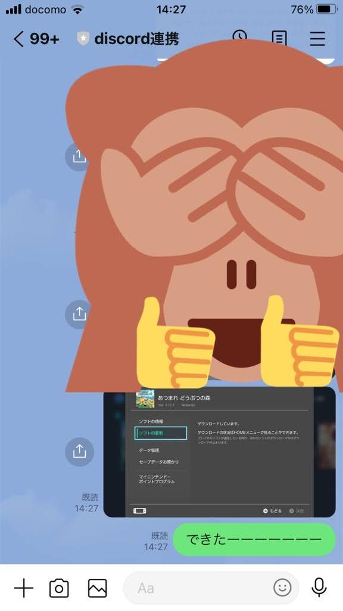
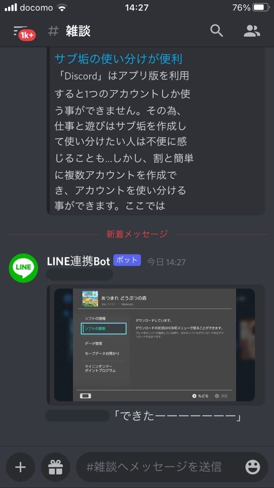

概要
前回の記事で書いたLINEとDiscord間のメッセージ連携の作り方です。使うもの
Google Apps Script(通称GAS)・Googleが提供するアプリ開発用プラットホーム。いろんなことできます。
httpリクエスト特化で使用します。
Glitch
・こちらもアプリ開発用のプラットホーム。Webアプリを作成できます。
APIを利用します。
Gyazo
・限定公開（URLを知らないと見れない）形式で画像を送信できるWebサービス。容量無制限かつAPIあり。
LINEからDiscordへ画像を送信する際に使用します。
Discord.js
・Discordをプログラムで扱えるようにするもの。
LINE Messageing API
・同じくLINEをプログラムで扱えるようにするもの。
ここにあるやつはすべてタダで利用できます。
全体図
LINEからDiscordへ

一方通行です。
1,GASでLINEからのメッセージを監視。
2,メッセージが来た場合、内容を受け取り、Webhookの形式でDiscordに送信。
DiscordからLINEへ
ちょっと複雑です。
1,GASでGlitchへリクエストを送信→24時間稼働させ、Discordからのメッセージを監視する。
2,Discordからメッセージが来た場合、Glitchが受け取る。
3,GlitchでGASが扱える形式に変換し、GASに送信。
4,GASがメッセージをLINEの形式に変換し、LINEへ送信する。
GASの役割
・LINEからメッセージを受け取り、Discordに送信。・5分おきにGlitch側にリクエストを送り、24時間稼働させる。
・LINEから送られてきた画像をgyazoに送信し、URLを取得。それをDiscordに送信。
・Discordからメッセージが送られてきた場合、Glitchからメッセージを受け取り、LINEに送信。
・友達数、当月分のプッシュを確認し、一日当たりのプッシュ上限を定める。
Glitchの役割
・Discordからメッセージを受け取り、GASを経由してLINEに送信。・Discordから画像が送られてきた場合、そのURLを取得して送信。
下準備
下準備として、LINEbot、Discordbot、DiscordWebhook、gyazoAPIを取得しましょう。LINEbot(控えるもの：アクセストークン)
Discordbot(控えるもの：アクセストークン)
DiscordWebhook(直に飛べます、控えるもの：URL)
Gyazo(控えるもの：アクセストークン)
上記のURLで説明してます。
gasでbot作成
コードを書く
GoogleDriveへ移動し、gasを起動します。新規→その他→Google Apps Scriptで出てくるはずです。
そうするとすぐにエディタが映るので、プログラムを書きましょう。
ソースコードはGitHub載せてあります。下記URLからコピペしましょう。
main.gsのCHANNEL_ACCESS_TOKENにはLINEbotで発行したアクセストークンを入れてください。
GLITCH_URLは後で作るglitchプロジェクトのURLです。後述します。
discord.gsのwebhookURLにはDiscordWebhookで発行したURLを入れます。
image.gsのaccess_tokenにはgyazoのトークンを入れます。
ウェブアプリケーションとして実装
メニューバーの公開からウェブアプリケーションとして公開を選択します。
プロジェクトバージョンは常にnew、実行ユーザーはme(自分のGmailアドレス)、アクセスできるユーザーはAnyone, even anonymousで更新します。
初回時に更新すると警告が表示されますが、無視して承認しましょう。
承認されるとhttps://script.google.com/ ....というURLが表示されます。
これをLINEbotのwebhookに登録します。
後述のGlitchでも使用するので控えておきましょう。
200のコードを確認した場合、成功です。次に進みます。
Glitch
GlitchでDiscord側のメッセージを監視するbotを作成します。Glitchに登録して、テンプレートから作成します。
Remix Your Ownからエディターに移動します。
こちらもソースコードはGitHub載せてあります。main.jsの部分を書き換えましょう。
main.jsだけでは動かないので.envファイルに記述します。
DISCORD_BOT_TOKENに取得したDiscordbotのトークンを入力します。
GASにリクエストを送るためGAS_URLを追加し、URLを入れます。
また、リクエストを送る必要があるため、requestモジュールをインストールする必要があります。
package.jsonを開き、Add packageでrequestと検索し、インストールしましょう。
これでGlitch側は完成です。
Glitch_URLの指定
先ほど空けておいたGlitch_URLを指定します。下記URLにプロジェクト名を入れ、設定します。
https://{Glitchプロジェクト名}.glitch.me/
(プロジェクト名がline-to-discordの場合、https://line-to-discord.glitch.me/)
追加した後、忘れずに更新を掛けましょう。
トリガーの設定
最後に24時間稼働させるためにトリガーを設定します。編集から現在のプロジェクトのトリガーを選択し、新規作成します。


設定は上記の通りです。保存したら完成です。
完成！！
試しにメッセージを送ってみましょう。 

(前回の記事の使いまわしです、、、ごめんなさい。)
こんな感じに動作します。
あとがき
結構頭抱えながら作りました。（笑）本当にわからないことが多く、いちいち調べていたので実装にかなり時間がかかりました。
ですがウェブリクエストの勉強には大きく役立ったと思います。
特に画像の送受信はネットを探しても見当たらなかったので、大きな進捗ではないでしょうか。
ただLINEの画像をバイナリデータからGyazoに渡すので処理に若干時間がかかります。
そのあたりが今後の課題です。
参考リンク
マジでお世話になりました。ありがとうございます。参考リンク1
参考リンク2
参考リンク3
参考リンク4
参考リンク5